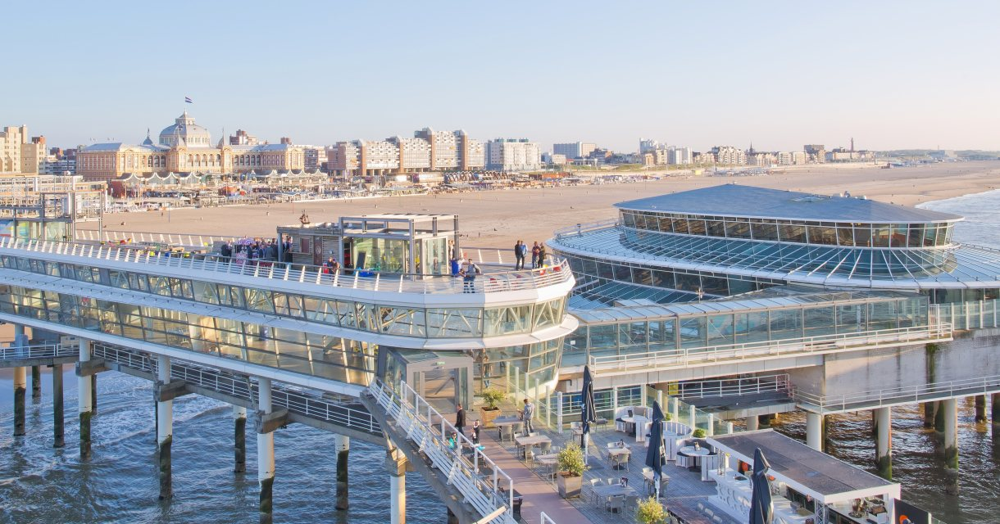
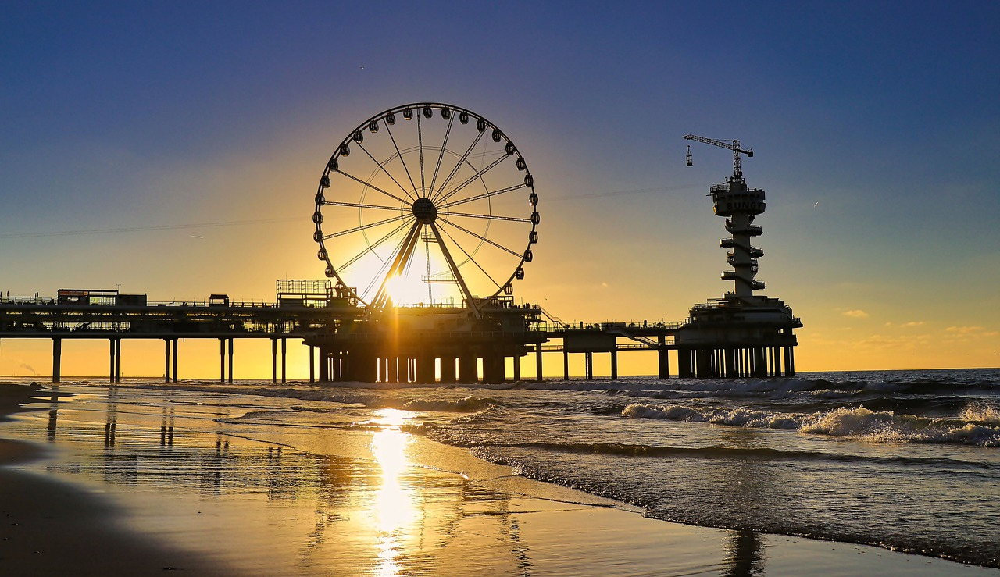

"Oh oh DenHaag, een mooie stad achter de duinen". Zo kent iedereen dit deuntje als je het hebt over Den
"Oh oh DenHaag, een mooie stad achter de duinen". Zo kent iedereen dit deuntje als je het hebt over Den Haag, Scheveningen. Scheveningen wordt ook wel de vissersplaats of badplaats van Den Haag genoemd. Highlights van Scheveningen zijn de Pier, Reuzenrad en Kurhaus. Langs de boulevard zijn veel restaurantjes en strandtentjes te vinden. Ook is het mogelijk om surflessen te nemen. Je kunt veel leuke activiteiten doen.
